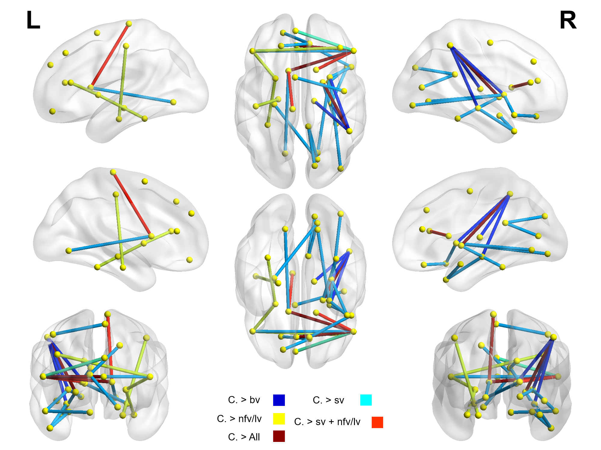
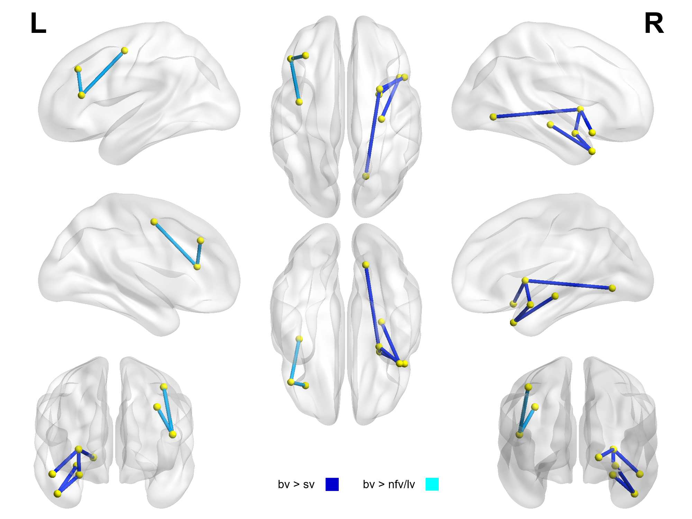

Figura 1b. Cerebro traslucido. Diferencias entre la variante conductual y las demás variantes. Las redes mostradas son las que estan alteradas en las variantes de lenguaje.

Antes de continuar tome nota de las cosas positivas y aspectos a mejorar de esta primera visualización.
|
|
|
| Figura
3a, Conexiones extructurales alteradas en la demencia frontotemporal con respecto a los controles |
Pacientes con DFT vs
Controles
|
| Figura
3b, Conexiones extructurales alteradas en la demencia frontotemporal variante frontal con respecto a las variantes de lenguaje |
Pacientes variante conductual
vs variantes de Lenguaje
|
|
|